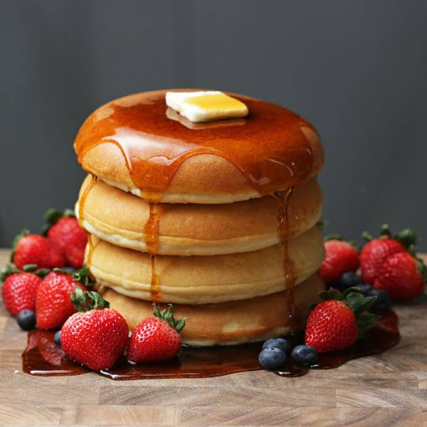

Pancakes Recipe

Description
A pancake (or hotcake, griddlecake, or flapjack) is a flat cake, often thin and round, prepared from a starch-based batter that may contain eggs, milk and butter and cooked on a hot surface such as a griddle or frying pan, often frying with oil or butter.
It is a type of batter bread.
Archaeological evidence suggests that pancakes were probably the earliest and most widespread cereal food eaten in prehistoric societies.
Ingredients
- Egg
- Flour
- Butter
- Milk
- Baking Powder
- Sugar
- Plain Flour
Steps
- In a large bowl, sift together the flour, baking powder, salt and sugar.
Make a well in the center and pour in the milk, egg and melted butter; mix until smooth.
- Heat a lightly oiled griddle or frying pan over medium-high heat.
Pour or scoop the batter onto the griddle, using approximately 1/4 cup for each pancake.
Brown on both sides and serve hot.